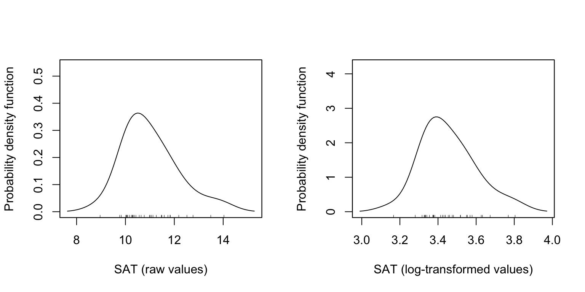

Unit 2: Nonlinearity: Log-Transforming the Predictor
In this set of notes, you will learn about log-transforming the predictor in a regression model to account for nonlinearity.
Preparation
Before class you will need to do the following:
- Refresh your knowledge about logarithms by going though the Khan Academy Intro to Logarithms tutorial.
2.1 Dataset and Research Question
The data we will use in this set of notes, mn-schools.csv (see the data codebook here), contains 2011 institutional data for \(n=33\) Minnesota colleges and universities.
# Load libraries
library(broom)
library(dplyr)
library(ggplot2)
library(readr)
library(sm)
library(tidyr)
# Import data
mn = read_csv(file = "~/Documents/github/epsy-8252/data/mn-schools.csv")
head(mn)# A tibble: 6 x 6
id name grad public sat tuition
<dbl> <chr> <dbl> <dbl> <dbl> <dbl>
1 1 Augsburg College 65.2 0 10.3 39.3
2 3 Bethany Lutheran College 52.6 0 10.6 30.5
3 4 Bethel University, Saint Paul, MN 73.3 0 11.4 39.4
4 5 Carleton College 92.6 0 14 54.3
5 6 College of Saint Benedict 81.1 0 11.8 43.2
6 7 Concordia College at Moorhead 69.4 0 11.4 36.6Using these data, we will examine if (and how) academic “quality” of the student-body (measured by median composite SAT score) is related to institutional graduation rates.
2.2 Log-Transformation of a Variable
Recall that the scatterplot of SAT scores and graduation rates suggested that the relationship between these variables was curvilinear.

Figure 2.1: Scatterplot of the relationship between median SAT score and six-year graduation rate. The loess smoother is also displayed.
One way to model this nonlinearity was to fit a model that included a polynomial effect (quadratic). Another method of modeling nonlinearity is to transform the predictor (or outcome) using a nonlinear transformation. One commonly used nonlinear transformation is the logarithm. Below is a comparison of the quadratic function to the logarithmic function.

Figure 2.2: Quadratic and logarithmic functions.
The quadratic function shows continuous and diminishing growth followed by continuous and increasing loss (parabola; the function changes direction), while the logarithmic function models continuous, albeit diminishing, growth (the function does not change direction).
2.2.1 Quick Refresher on Logarithms
The logarithm is an inverse function of an exponent. Consider this example,
\[ \log_2 (32) \]
The logarithm of 32 is the exponent to which the base, 2 in our example, must be raised to produce that number. In other words,
\[ \log_2 (32) \longrightarrow 2^{x} = 32 \longrightarrow x=5 \]
Thus,
\[ \log_2 (32) = 5 \]
To compute a logarithm using R, we use the log() function. We also specify the argument base=, since logarithms are unique to a particular base. For example, to compute the mathematical expression \(\log_2 (32)\), we use
log(32, base = 2)[1] 5There is also a shortcut function to use base-2.
log2(32)[1] 52.2.2 Log-Transforming Variables
For our purposes, we need to log-transform each value in a particular variable. Here, we will log-transform the SAT variable (using base-2).
mn = mn %>%
mutate(
L2sat = log(sat, base = 2)
)
head(mn)# A tibble: 6 x 7
id name grad public sat tuition L2sat
<dbl> <chr> <dbl> <dbl> <dbl> <dbl> <dbl>
1 1 Augsburg College 65.2 0 10.3 39.3 3.36
2 3 Bethany Lutheran College 52.6 0 10.6 30.5 3.41
3 4 Bethel University, Saint Paul, MN 73.3 0 11.4 39.4 3.52
4 5 Carleton College 92.6 0 14 54.3 3.81
5 6 College of Saint Benedict 81.1 0 11.8 43.2 3.57
6 7 Concordia College at Moorhead 69.4 0 11.4 36.6 3.52How does this log-transformed variable compare to the original SAT predictor. We can examine the density plot of both the original and log-transformed variables to answer this.

- Comparing the shapes of the two variables, we see that the original variable was right-skewed. The log-transformed variable is also right-skewed, although it is LESS right-skewed than the original.
- The scale is quite different between the two variables (one is, after all, log-transformed). This has greatly affected the variation. After log-transforming, the variation is much smaller.
What happens when we use the log-transformed variable in a scatterplot with graduation rates?
ggplot(data = mn, aes(x = L2sat, y = grad)) +
geom_point() +
geom_smooth(se = FALSE) +
theme_bw() +
xlab("Log-transformed SAT score") +
ylab("Six-year graduation rate")
Figure 2.3: Scatterplot of the relationship between log-transformed median SAT score (base-2) and six-year graduation rate. The loess smoother is also displayed.
The relationship between graduation rate and the log-transformed SAT scores is MORE linear than the relationship between graduation rates and the untransformed SAT scores. By transforming the variable using a nonlinear transformation (log) we have “linearized” the relationship with graduation rates. As such, we can fit a linear model to predict graduation rates using the Log-transformed SAT scores as a predictor.
2.3 Fitting the Regression Model
To fit the model, we use the lm() function and input the log-transformed SAT scores as the predictor.
lm.1 = lm(grad ~ 1 + L2sat, data = mn)2.3.1 Examine the Assumption of Linearity
Before examining the coefficients, we can scrutinize the residuals to see whether the log-transformation helped us meet the assumption of linearity.
# Obtain residuals
out = augment(lm.1)
# Check linearity assumptions
ggplot(data = out, aes(x = .fitted, y = .std.resid)) +
geom_point() +
geom_hline(yintercept = 0) +
geom_smooth() +
theme_bw()
The assumption looks reasonably met as the horizontal line of \(y=0\) is encompassed in the confidence envelope of the loess smoother.
2.3.2 Interpret the Regression Results
We can now look at the regression output and interpret the results.
# Model-level output
glance(lm.1)Examining the model-level output, we see that differences in \(\log_2(\mathrm{SAT})\) explain 81.13% of the variation in graduation rates. This is statistically significant, \(F(1,~31)=133.3\), \(p<.001\). Since differences in \(\log_2(\mathrm{SAT})\) imply that there are differences in the raw SAT scores, we would typically just say that “differences in SAT scores explain 81.13% of the variation in graduation rates.”
Moving to the coefficient-level output,
# Coefficient-level output
tidy(lm.1)We can write the fitted equation as,
\[ \hat{\mathrm{Graduation~Rate}} = -306.7 + 106.4\bigg[\log_2(\mathrm{SAT})\bigg] \]
We can interpret the coefficients as we always do, recognizing that these interpretation are based on the log-transformed predictor.
- The intercept value of \(-306.7\) is the predicted average graduation rate for all colleges/universities with a \(\log_2(\mathrm{SAT})\) value of 0.
- The slope value of 106.4 indicates that each one-unit difference in \(\log_2(\mathrm{SAT})\) is associated with a 106.4-unit difference in graduation rate, on average.
2.3.3 Better Interpretations: Back-transforming
While these interpretations are technically correct, it is more helpful to your readers (and more conventional) to interpret any regression results in the metric of SAT scores rather than log-transformed SAT scores. This means we have to back-transform the interpretations. To back-transform a logarithm, we use its inverse function; exponentiation.
We interpreted the intercept as, “the predicted average graduation rate for all colleges/universities with a \(\log_2(\mathrm{SAT})\) value of 0”. To interpret this using the metric of our SAT attribute, we have to understand what \(\log_2(\mathrm{SAT}) = 0\) is.
\[ \log_2 (\mathrm{SAT}) = 0 \longrightarrow 2^{0} = \mathrm{SAT} \]
In this computation, \(\mathrm{SAT}=1\). Thus, rather than using the log-transformed interpretation, we can, instead, interpret the intercept as,
The predicted average graduation rate for all colleges/universities with a SAT measurement of 1 (median SAT = 100) is \(-306.7\). Since there are no colleges/universities in our data that have a SAT value of 1, this is extrapolation.
What about the slope? Our interpretation was that “each one-unit difference in \(\log_2(\mathrm{SAT})\) is associated with a 106.4-unit difference in graduation rate, on average.” Working with the same ideas of back-transformation, we need to understand what a one-unit difference in \(\log_2(\mathrm{SAT})\) means. Consider four values of \(\log_2(\mathrm{SAT})\) that are each one-unit apart:
\[ \log_2(\mathrm{SAT}) = 1\\ \log_2(\mathrm{SAT}) = 2\\ \log_2(\mathrm{SAT}) = 3\\ \log_2(\mathrm{SAT}) = 4 \]
If we back-transform each of these, then we can see how the four values of the raw SAT variable would differ.
\[ \begin{split} \mathrm{SAT} &= 2^1 = 2\\ \mathrm{SAT} &= 2^2 = 4\\ \mathrm{SAT} &= 2^3 = 8\\ \mathrm{SAT} &= 2^4 = 16 \end{split} \]
When \(\log_2(\mathrm{SAT})\) is increased by one-unit, the raw SAT value is doubled. We can use this in our interpretation of slope:
A doubling of the SAT value is associated with a 106.4-unit difference in graduation rate, on average.
The technical language for doubling is a “two-fold difference”. So we would conventionally interpret this as:
Each two-fold difference in SAT value is associated with a 106.4-unit difference in graduation rate, on average.
To understand this further, consider a specific school, say Augsburg. Their measurement on the SAT variable is 10.3, and their log-transformed SAT score is 3.36. Using the fitted regression equation (which employs the log-transformed SAT),
-306.7 + 106.4 * 3.36[1] 50.8Augsburg’s predicted graduation rate would be 50.8. If we increase the L2sat score by 1 to 4.36 (which is equivalent to a raw SAT measurement of 20.6; double 10.3), their predicted graduation rate is,
-306.7 + 106.4 * 4.36[1] 157.2This is an increase of 106.4.
2.4 Alternative Method of Fitting the Model
Rather that create the log-transformed SAT score in the data, we can use the log() function on SAT directly in the lm() computation.
lm.1 = lm(grad ~ 1 + log(sat, base = 2), data = mn)
# Model-level output
glance(lm.1)# Coefficient-level output
tidy(lm.1)Using this method of fitting the model will be useful as we plot the fitted model.
2.5 Plotting the Fitted Model
To aid interpretation of the effect of SAT on graduation rate, we can plot the fitted model. If we used the method of fitting in which we used log() directly in the lm() function, we only need to set up a sequence of SAT values, predict graduation rates using the fitted model, and finally connect these values using a line.
# Set up data
plot_data = crossing(
sat = seq(from = 8.9, to = 14.0, by = 0.1)
) %>%
mutate(
# Predict
yhat = predict(lm.1, newdata = .)
)
# Examine data
head(plot_data)# Plot
ggplot(data = plot_data, aes(x = sat, y = yhat)) +
geom_line() +
theme_bw() +
xlab("Median SAT score (in hundreds)") +
ylab("Predicted graduation rate")
Figure 2.4: Plot of the predicted graduation rates as a function of median SAT score (in hundreds). The non-linearity in the plot indicates that there is a diminishing positive effect of SAT on graduation rates.
2.6 Different Base Values in the Logarithm
The base value we used in the log() function in the previous example was base-2. Using a base value of 2 was an arbitrary choice. We can use any base value we want. For example, what happens if we use base-10.
mn = mn %>%
mutate(
L10sat = log(mn$sat, base = 10)
)
# Examine data
head(mn)# A tibble: 6 x 8
id name grad public sat tuition L2sat L10sat
<dbl> <chr> <dbl> <dbl> <dbl> <dbl> <dbl> <dbl>
1 1 Augsburg College 65.2 0 10.3 39.3 3.36 1.01
2 3 Bethany Lutheran College 52.6 0 10.6 30.5 3.41 1.03
3 4 Bethel University, Saint P… 73.3 0 11.4 39.4 3.52 1.06
4 5 Carleton College 92.6 0 14 54.3 3.81 1.15
5 6 College of Saint Benedict 81.1 0 11.8 43.2 3.57 1.07
6 7 Concordia College at Moorh… 69.4 0 11.4 36.6 3.52 1.06Comparing the logarithms of the SAT attribute using base-10 to those using base-2 we see that the base-10 logarithms are smaller. This is because now we are using the base of 10 in our exponent (rather than 2). For example, for Augsburg,
\[ 10^{1.013} = 10.3 \]
If we fit a model using the base-10 logarithm,
lm.2 = lm(grad ~ 1 + log(sat, base = 10), data = mn)
# Model-level output
glance(lm.2)Examining the model-level output, we see that differences in \(\log_{10}(\mathrm{SAT})\) explain 81.13% of the variation in graduation rates. Or simply, that differences in SAT scores explain 81.13% of the variation in graduation rates. This is statistically significant, \(F(1,~31)=133.3\), \(p<.001\). These model-level results are the same as when we used the base-2 logarithm.
# Coefficient-level output
tidy(lm.2)The fitted equation is,
\[ \hat{\mathrm{Graduation~Rate}} = -306.7 + 353.6\bigg[\log_{10}(\mathrm{SAT})\bigg] \]
We can interpret the coefficients using the base-10 logarithm of SAT scores as:
- The intercept value of \(-306.7\) is the predicted average graduation rate for all colleges/universities with a \(\log_{10}(\mathrm{SAT})\) value of 0.
- The slope value of 353.6 indicates that each one-unit difference in \(\log_{10}(\mathrm{SAT})\) is associated with a 353.6-unit difference in graduation rate, on average.
Better yet, we can back-transform the interpretations so that we are using SAT scores rather than \(\log_{10}(\mathrm{SAT})\) scores.
- The predicted average graduation rate for all colleges/universities with a SAT value of 1 (median SAT score = 100) is \(-306.7\).
- Each ten-fold difference in SAT is associated with a 353.6-unit difference in graduation rate, on average.
To further think about the effect of SAT, if Augsburg improved its median SAT score ten-fold (i.e., going from a SAT value of 10.3 to a value of 103) we would predict its graduation rate to go up by 353.6.
2.6.1 Comparing the Output from the Two Bases
The model-level information is all the same. Furthermore, the intercepts (and SE and \(p\)-value) was the same across both models. The slope coefficients and SEs were different in the two models, but the \(t\)-value and \(p\)-value for the effect of SAT was identical for both base-2 and base-10. The only real difference in using base-10 vs. base-2 in the logarithm is in the interpretation of the SAT effect.
What if we look at the residual fit?

Figure 2.5: Standardized residuals versus the fitted values for the models fitted with the log-2 predictor (left) and the log-10 predictor (right).
The residuals fit EXACTLY the same. Why is this? Let’s again use Augsburg as an example. Using the fitted model that employed the base-2 logarithm, we found that Augsburg’s predicted graduation rate was,
\[ \begin{split} \hat{\mathrm{Graduation~Rate}} &= -306.7 + 106.4\bigg[\log_2(10.3)\bigg] \\ &= -306.7 + 106.4\bigg[3.36\bigg] \\ &= 50.8 \end{split} \]
Using the model that employed the base-10 logarithm, Augsburg’s predicted graduation rate would be
\[ \begin{split} \hat{\mathrm{Graduation~Rate}} &= -306.7 + 353.6\bigg[\log_{10}(10.3)\bigg] \\ &= -306.7 + 353.6\bigg[1.01\bigg] \\ &= 50.8 \end{split} \]
Augsburg’s predicted graduation rate is exactly the same in the two models. This implies that Augsburg’s residual would also be the same in the two models. This is true for every college. Because of this, increasing (or decreasing) the base used in the logarithm does not help improve the fit of the model. The fit is exactly the same no matter which base you choose.
The only thing that changes when you choose a different base is the interpretation of the slope. You should choose the base to facilitate interpretation. For example, does it make more sense to talk about a two-fold difference in the predictor? A five-fold difference in the predictor? A ten-fold difference in the predictor?
2.7 Base-\(e\) Logarithm: The Natural Logarithm
In our example, neither of the bases we examined is satisfactory in terms of talking about the effect of SAT. Two-fold differences in SAT are very unlikely, to say anything of ten-fold differences. One base that is commonly used for log-transformations is base-\(e\). \(e\) is a mathematical constant (Euler’s number) that is approximately equal to 2.71828. We can obtain this by using the exp() function in R. This function takes \(e\) to some exponent that is given as the argument. So to obtain the approximation of \(e\) we use
exp(1)[1] 2.718The logarithm (base-\(e\)) for a number, referred to as the natural logarithm, can be obtained using the log() function with the argument base=exp(1). However, this base is so commonly used that it is the default value for the base= argument. So, if we use the log() function without defining the base= argument, it will automatically use base-\(e\). For example, the natural logarithm of Augsburg’s SAT score of 1030 can be computed as
log(10.3)[1] 2.332If we took \(e^{2.332}\) we would obtain 10.3. The natural logarithm even has its own mathematical notation; \(\ln\). For example, we would mathematically express the natural logarithm of 10.3 as
\[ \ln (10.3) = 2.332. \]
2.7.1 Using the Natural Logarithm in a Regression Model
Below we regress graduation rates on the log-transformed SAT scores, using the natural logarithm.
# Fit model
lm.3 = lm(grad ~ 1 + log(sat), data = mn)
# Model-level output
glance(lm.3)As with any base, using base-\(e\) results in the same model-level information (\(R^2=.811\), \(F(1,~31)=133.3\), \(p<.001\)).
# Coefficient-level output
tidy(lm.3)The intercept has the same coefficient (\(\hat\beta_0=-306.7\)), SE, \(t\)-value, and \(p\)-value as the intercept from the models using base-2 and base-10 log-transformations of SAT. (This is, again, because \(2^0=10^0=e^0=1\).) And, although the coefficient and SE for the effect of SAT is again different (a one-unit change in the three different log-scales does not correspond to the same amount of change in raw SAT for the three models), the \(t\)-value and level of statistical significance (\(t(31)=11.55\), \(p<.001\)) for this effect, are the same as when we used base-2 and base-10.
So how can we interpret the model’s coefficients?
- The intercept can be interpreted exactly the same as in the previous models in which we used base-2 or base-10; namely that the predicted average graduation rate for colleges/universities with a SAT value of one is \(-306.7\).
- Interpreting the slope, we could say that an \(e\)-fold difference in SAT value is associated with a 153.6-unit difference in graduation rates, on average.
2.7.1.1 Interpretation Using Percentage Change
Consider three schools, each having a SAT score that differs by 1%; say these schools have SAT values of 10, 10.1, 10.2. Using the fitted equation, we can compute the predicted graduation rate for each of these hypothetical schools:
\[ \hat{\mathrm{Graduation~Rate}} = -306.7 + 153.6 \bigg[\ln (\mathrm{SAT})\bigg] \]
The SAT values and predicted graduation rates for these schools are given below:
| SAT | Predicted Graduation Rate |
|---|---|
| 10.0 | 46.88 |
| 10.1 | 48.41 |
| 10.2 | 49.93 |
The difference between each subsequent predicted graduation rate is 1.53.
48.4058 - 46.8778[1] 1.52849.9338 - 48.4058[1] 1.528In other words, schools that have a SAT value that differ by 1%, have predicted graduation rates that differ by 1.53, on average.
2.7.1.2 Mathematical Explanation
To understand how we can directly compute this difference, consider the predicted values for two \(x\)-values that differ by one-percent, if we use symbolic notation:
\[ \begin{split} \hat{y}_1 &= \hat\beta_0 + \hat\beta_1\left[\ln(x)\right] \\ \hat{y}_2 &= \hat\beta_0 + \hat\beta_1\left[\ln(1.01x)\right] \end{split} \]
The difference in their predicted values is:
\[ \begin{split} \hat{y}_2 - \hat{y}_1 &= \hat\beta_0 + \hat\beta_1\left[\ln(1.01x)\right] - \left(\hat\beta_0 + \hat\beta_1\left[\ln(x)\right]\right) \\ &=\hat\beta_0 + \hat\beta_1\left[\ln(1.01x)\right] - \hat\beta_0 - \hat\beta_1\left[\ln(x)\right] \\ &=\hat\beta_1\left[\ln(1.01x)\right] - \hat\beta_1\left[\ln(x)\right] \\ &=\hat\beta_1\left[\ln(1.01x) - \ln(x)\right]\\ &=\hat\beta_1\left[\ln(\frac{1.01x}{1x})\right] \end{split} \]
If we substitute in any value for \(x\), we can now directly compute this constant difference. Note that a convenient value for \(x\) is 1. Then this reduces to:
\[ \hat\beta_1\left[\ln(1.01)\right] \]
So now, we can interpret this as: a one-percent difference in \(x\) is associated with a \(\hat\beta_1\left[\ln(1.01)\right]\)-unit difference in \(Y\), on average.
In our model, we can compute this difference using the fitted coefficient \(\hat\beta_1=153.6\) as
\[ 153.6\left[\ln(1.01)\right] = 1.528371 \]
The same computation using R is
153.6 * log(1.01)[1] 1.528This gives you the constant difference exactly. So you can interpret the effect of SAT as, each 1% difference in SAT score is associated with a difference in graduation rates of 1.53, on average.
2.7.1.3 Approximate Interpretation
We can get an approximate estimate for the size of the effect by using the mathematical shortcut of
\[ \mathrm{Effect} \approx \frac{\hat\beta_1}{100} \]
Using our fitted results, we could approximate the size of the effect as,
\[ \frac{153.6}{100} = 1.536 \]
We could then interpret the effect of SAT by saying a 1% difference in median SAT score is associated with a 1.53-unit difference in predicted graduation rate, on average.
2.8 Including Covariates
We can also include covariates in the model. Below we examine the nonlinear effect of SAT on graduation controlling for differences in sector.
# Fit model
lm.4 = lm(grad ~ 1 + public + log(sat), data = mn)
# Model-level output
glance(lm.4)The model explains 86.5% of the variation in graduation rates, \(F(2,~30)=96.58\), \(p<.001\).
# Coefficient-level output
tidy(lm.4)Interpreting each of the coefficients using the raw SAT scores:
- The intercept value of \(-286.1\) is the predicted average graduation rate for all public colleges/universities with a SAT value of 1 (extrapolation).
- There is a statistically significant effect of sector after controlling for differences in SAT score (\(p=.002\)). Public schools have a predicted graduation rate that is 8.5-units lower, on average, than private schools controlling for differences in median SAT scores.
- There is a statistically significant effect of SAT on graduation rates, controlling for differences in sector (\(p<.001\)). A 1% difference in median SAT value is associated with a 1.46-unit difference in predicted graduation rate, on average, after controlling for differences in sector.
2.8.1 Plot of the Model Results
To further help interpret these effects, we can plot the fitted model.
# Set up data
plot_data = crossing(
sat = seq(from = 8.9, to = 14.0, by = .1),
public = c(0, 1)
) %>%
mutate(
yhat = predict(lm.4, newdata = .),
public = factor(public, levels = c(0, 1), labels = c("Private", "Public"))
)
#Examine data
head(plot_data)# Plot
ggplot(data = plot_data, aes(x = sat, y = yhat, color = public, linetype = public)) +
geom_line() +
theme_bw() +
xlab("Median SAT score (in hundreds)") +
ylab("Predicted graduation rate") +
ggsci::scale_color_d3(name = "Sector") +
scale_linetype_manual(name = "Sector", values = c("solid", "dashed"))
Figure 2.6: Predicted graduation rate as a function of median SAT score (in hundreds) and sector. The effect of SAT is log-linear.
The plot shows the nonlinear, diminishing positive effect of SAT on graduation rate for both public and private schools. For schools with lower median SAT scores, there is a larger effect on graduation rates than for schools with higher median SAT scores (for both private and public schools). The plot also shows the controlled effect of sector. For schools with the same median SAT score, private schools have a higher predicted graduation rate than public schools, on average.
2.9 Polynomial Effects vs. Log-Transformations
The inclusion of polynomial effects and the use of a log-transformation was to model the nonlinearity observed in the relationship between SAT scores and graduation rates. Both methods were successful in this endeavor. While either method could be used in practice to model nonlinearity, there are some considerations when making the choice of which may be more appropriate for a given modeling situation.
The first consideration is one of theory. The plot below shows the mathematical function for a log-transformed \(X\)-value (solid, black line) and for a quadratic polynomial of \(X\) (dashed, red line).

Figure 2.7: Comparison of quadratic (blue, dashed) and logarithmic (black, solid) functions of X.
Both functions are nonlinear, however the polynomial function changes direction. For low values of \(X\), the function has a large positive effect. This effect diminishes as \(X\) gets bigger, and around \(X=9\) the effect is zero. For larger values of \(X\), the effect is actually negative. For the logarithmic function, the effect is always positive, but it diminishes as \(X\) gets larger. (Functions that constantly increase, or constantly decrease, are referred to as monotonic functions.) Theoretically, these are very different ideas, and if substantive literature suggests one or the other, you should probably acknowledge that in the underlying statistical model that is fitted.
Empirically, the two functions are very similar especially within certain ranges of \(X\). For example, although the predictions from these models would be quite different for really high values of \(X\), if we only had data from the range of 2 to 8 (\(2\leq X \leq 8\)) both functions would produce similar residuals. In this case, the residuals would likely not suggest better fit for either of the two models. In this case, it might be prudent to think about Occam’s Razor—if two competing models produce similar predictions, adopt the simpler model. Between these two functions, the log-transformed model is simpler; it has one predictor compared to the two predictors in the quadratic model. The mathematical models make this clear:
\[ \begin{split} \mathbf{Polynomial:~}Y_i &= \beta_0 + \beta_1(X_i) + \beta_2(X_i^2) +\epsilon_i \\ \mathbf{Log\mbox{-}Transform:~}Y_i &= \beta_0 + \beta_1\bigg[\ln(X_i)\bigg] + \epsilon_i \end{split} \]
The quadratic polynomial model has two effects: a linear effect of \(X\) and a quadratic effect of \(X\) (remember it is an interaction model), while the model using the log-transformed predictor only has a single effect. If there is no theory to guide your model’s functional form, and the residuals from the polynomial and log-transformed models seem to fit equally well, then the log-transformed model saves you a degree of freedom, and probably should be adopted.
Other Resources
In addition to the notes and what we cover in class, there are many other resources for learning about log-transformations. Here are some resources that may be helpful in that endeavor:
- Interpreting Coefficients in Regression with Log-Transformed Variables
- Interpret Regression Coefficient Estimates